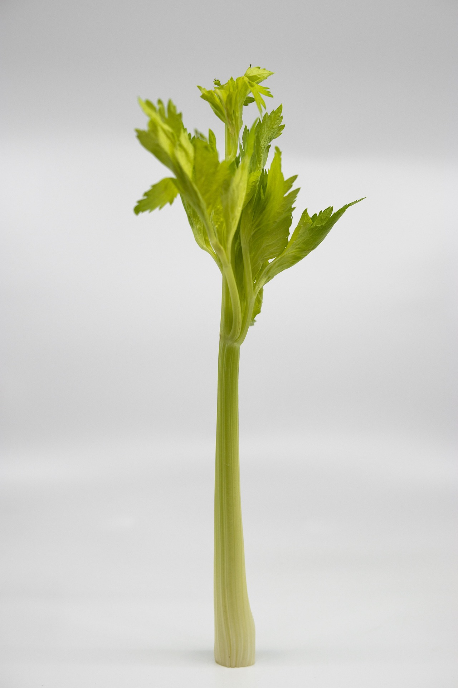

Celery Nutrition

- Low in Calories: Celery is very low in calories, making it a great choice for weight management.
- High Water Content: Helps with hydration, contributing to overall fluid balance.
- Rich in Fiber: Supports digestion, promotes satiety, and aids in weight control.
- Vitamin K: Essential for bone health and plays a role in blood clotting.
- Potassium: Helps regulate fluid balance, supports heart health, and maintains muscle and nerve function.
- Folate: Important for DNA synthesis, cell growth, and especially beneficial during pregnancy.
- Vitamins A and C: Contribute to healthy skin, eyes, and immune function.
- Low in Carbohydrates: Suitable for low-carb and blood sugar management diets.
- Antioxidants: Contains flavonoids and phenolic acids that help reduce inflammation and protect cells from oxidative stress.